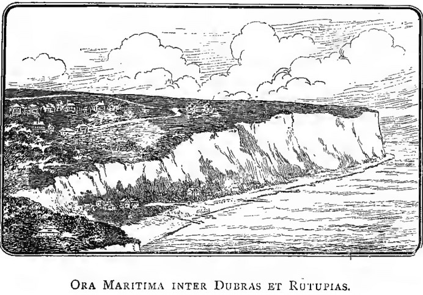 2 Fēriae nunc sunt. Inter fēriās in vīllā maritimā habitō. Ō beātās ferās! In arēnā ōrae maritimae sunt ancorae et catēnae. Nam incolae ōrae maritimae sunt nautae. Magna est audācia nautārum: procellās nōn formīdant. Nautās amō, ut nautae mē amant. Cum nautīs interdum in scaphīs nāvigiō.
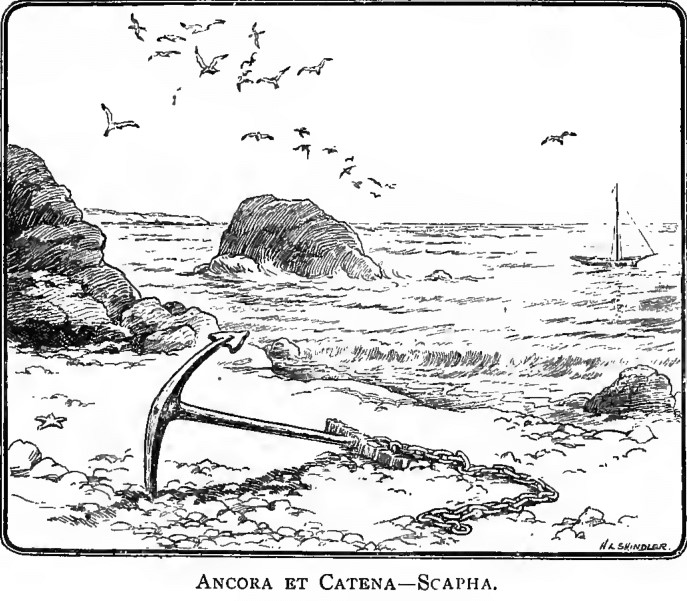 3 Ex fenestrīs vīllae undās spectās. Undās caeruleās amō. Quam magnae sunt, quam perlūcidae! Post cēnam lūnam et stēllās ex fenestrā meā spectō. Prope vīllam est silva, ubi cum amitā meā saepe ambulō. Quantopere nōs silva dēlectat! Ō cōpiam plantārum et herbārum! Ō cōpiam bācārum! Nōn sōlum nautae sed etiam agricolae circum habitant. Casae agricolārum parvae sunt. Nautae casās albās habitant. Amita mea casās agricolārum et nautārum saepe vīsitat.
4 Victōria est rēgīna mea. Magna est glōria Victōriae Rēgīnae, nōn sōlum in īnsulīs Britannicīs sed etiam in Indiā, in Canadā, in Austrāliā, in Āfricā, ubi colōniae Britannicae sunt. Rēgīna est domina multārum terrārum. Britannia est domina undārum. In glōriā rēgīnae meae triumphō. Tē, Britannia, amō: vōs, īnsulae Britannicae, amō. Sed Britannia nōn est patria mea. Ex Āfricā Merīdiānā sum.
5 Lȳdia quoque, cōnsōbrīna mea, apud amitam meam nunc habitat. Lȳdia columbās cūrat: cūra columbārum Lȳdiae magnam laetitiam dat. Tū, Lȳdia, cum apud magistram tuam es, linguae Francogallicae et linguae Anglicae operam dās; sed ego linguīs antīquīs Rōmae et Graeciae operam dō. Saepe cum Lȳdiā ad silvam vel ad ōram maritimam ambulō. Interdum cum nautā in scaphā nāvigāmus. Quantopere nōs undae caeruleae dēlectant! Lȳdia casās agricolārum cum amitā meā interdum vīsitat. Vōs, fīliae agricolārum, Lȳdiam amātis, ut Lȳdia vōs amat. Ubi inopia est, ibi amita mea inopiam levat.
7 In angulō hortī sunt ulmī. In ulmīs corvī nīdificant. Corvōs libenter spectō, cum circum nīdōs suōs volitant. Magnus est numerus corvōrum in hortō patruī meī; multī mergī super ōceanum volitant. Vōs, mergī, libenter spectō, cum super ōceanum volitātīs et praedam captātis. Ōceanus mergīs cibum dat. Patruum meum hortus et agellus suus dēlectant; in agellō sunt equī et vaccae et porcī et gallī gallīnaeque. Lȳdia gallōs galliāsque parat. Nōn procul ab agellō est vīcus, ubi rūsticī habitant. Nōnnūllī ex rūsticīs agellum cum equīs et vaccīs et porcīs cūrant.
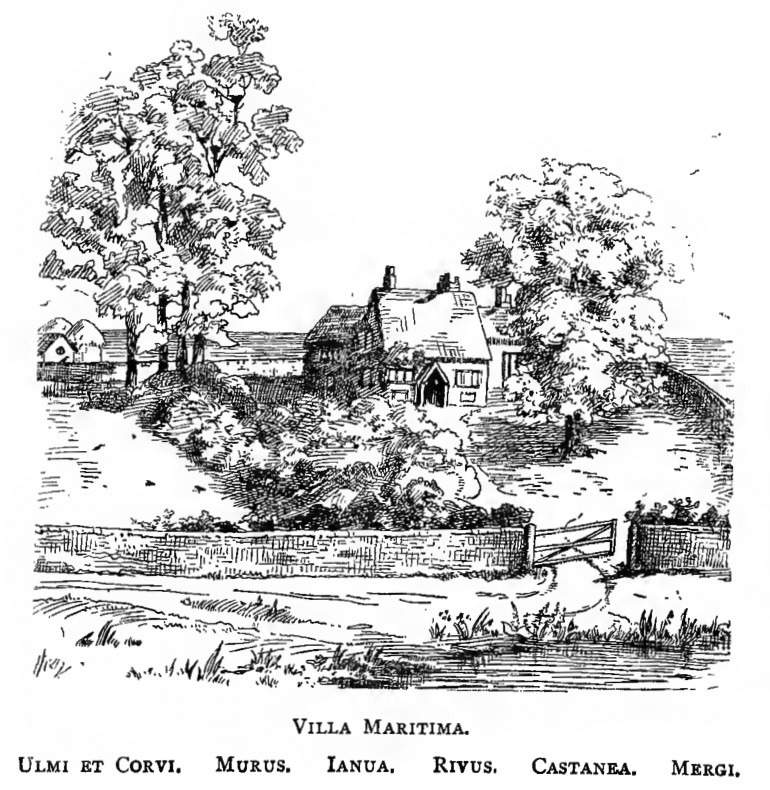 8 Ex hōrā patrum meī scopulōs albōs ōrae maritimae spectāmus. Scopulī sunt altī. Et ōra Francogallica nōn procul abest. Noctī ex scopulīs pharōs ōrae Francogallicae spectāmus, velut stēllās clārās in ōceanō. Quam bellus es, ōceane, cum lūna undās tuās illūstrat! Quantopere mē dēlectat vōs, undae caeruleae, spectāre, cum tranquillae estis et arēnam ōrae maritimae laxātis! Quantopere mē dēlectātis cum turbulentae estis et sub scopulīs spūmātis et murmurātis!
10 Inter fēriās commentāriōs meōs dē vītā meā scrīptiō. Dubrās saepe vīsitāmus; nam oppidum nōn procul abest. Super oppidum est castellum magnum; in castellō est specula antīqua. Mūrī speculae altī et lātī sunt. Quondam erat pharus Rōmānōrum. Prope speculam est aedificium cōnsecrātum. Iam secundō saeculō post Chrīstum nātum basilica Chrīstiāna erat.
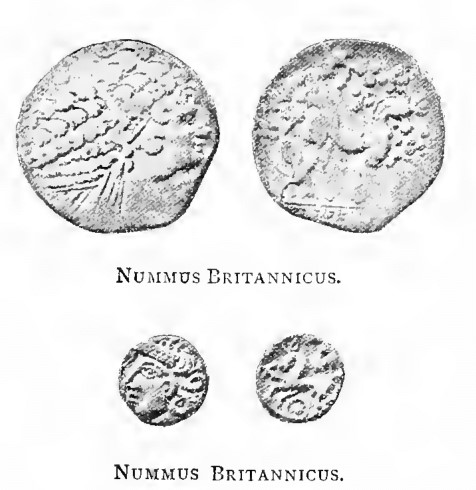 11 Castellum in prōmunturiō ōrae maritimae stat. Post castellum sunt clīvī grāmineī et lātī. Ex castellō fretum Gallicum spectās. Ante oculōs sunt vēla alba multōrum nāvigiōrum; nāvigia sunt Britannica, Francogallica, Germānica, Belgica. Nōnnūlla ex nāvigiīs Britannicīs “castella” nōmināta sunt. Littera C in signō est. “Castella” in Āfricam Merīdiānam nāvigant, ubi patria mea est.
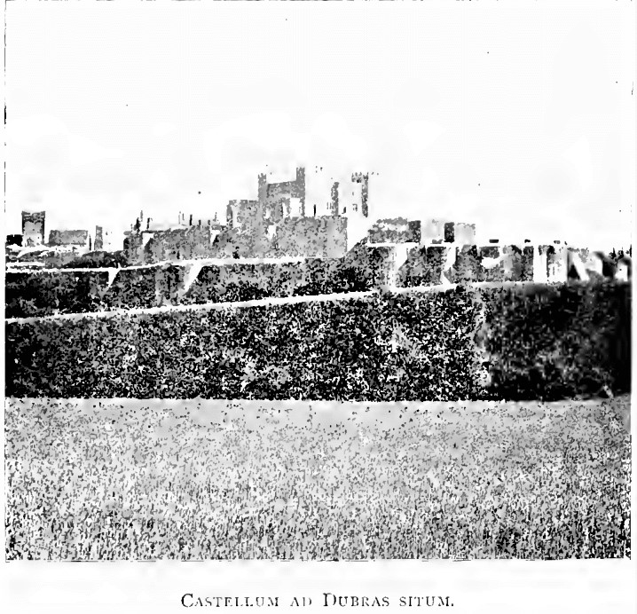
13 Nōbīs puerīs fēriae plēnae sunt gaudiōrum ā māne usque ad vesperum. Nōnnumquam in scaphā cum Petrō nāvigāmus. Petrus est adulēscentulus vīgintī annōrum. Petrī scapha nōn sōlum rēmīs sed etiam velīs apta est. Plērumque rēmigāmus, sed nōnnumquam vēla damus, cum ventus nōn nimis asper est. Petrus scapham gubernat et ministrat. Nōs puerī scapham bellam laudāmus et amāmus.
14 Nōn procul ā Dubrīs est scopulus altus, unde ōceanum et nāvigia et ōram maritimam spectās. Locus in fābulā commemorātus est, ubi Leir, rēgulus Britannōrum antīquōrum, fortūnam suam miseram dēplōrat, stultitiam suam culpat, fīliās suās animī ingrātī accūsat. Ō fortūnam asperam! Ō fīliās impiās! Ō cōnstantiam Cordēliae! Scopulus ex poētā nōminātus est. Nam in fābulā est locus ubi vir generōsus, amīcus fīdus rēgulī, dē scopulō sē praecipitāre parat; sed fīlius suus virum ex perīculō servat. Fīlium fīdum laudō et amō. Nōs puerī locum saepe vīsitāmus.
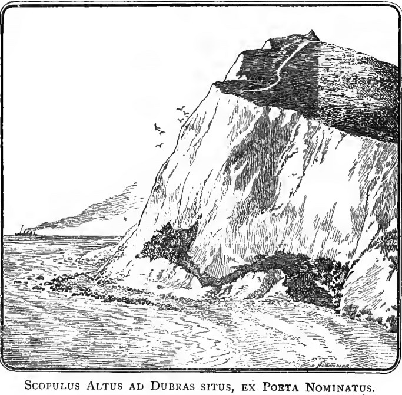
17 “Solum, ubi līberum erat silvīs, frūgiferum erat. Metallīs quoque multīs abundābat — plumbō albō et ferrō, atque, ut Tacitus affirmat, aurō argentōque. Margarītās et ostreās dabat ōceanus: margarītae parvae erant, sed ostreae magnae et praeclārae. Caelum tum quoque crēbrīs pluviīs et nebulīs ātrīs foedum erat; sed pruīnae asperae aberant. Nātūra ōceanī ‘pigra’ erat, sī testimōnium Tacitī vērum est: nautae Rōmānī, inquit, in aquā pigrā vix poterant rēmigāre. Sed vērumne est testimōnium? An nātūra nautārum Rōmānōrum nōn satis impigra erat?”
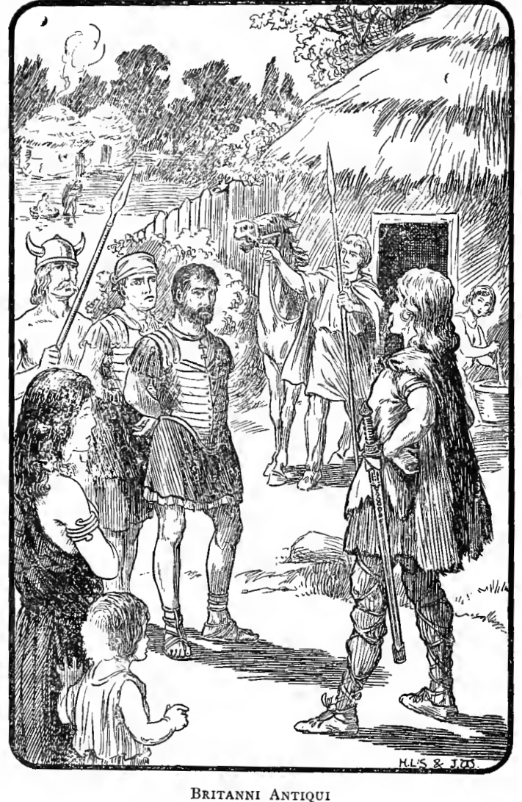 18 “Incolae antīquī īnsulae nostrae ferī et bellicōsī erant. Hastīs, sagittīs, essedīs inter sē pugnābant. Proelia Britannōs antīquōs dēlectābant. Multī et dīversī erant populī Britannōrum. Multī ex populīs erant Celtae. Celtīs antīquīs, sīcut Germānīs, capillī flāvī, oculī caeruleī, membra magna et rōbusta erant. Sīc Tacitus dē Calēdoniīs nārrat. Incolae Cambriae merīdiānae ‘colōrātī’ erant. Sed Rōmānīs statūra parva, oculī et capillī nigrī erant. Ūniversī Britannī, ut Gāius Iūlius affirmat, membra vitrō colōrābant, sīcut nautae nostrī hodiernī. Vestīmenta ex coriīs ferrum cōnstābant. In casīs parvīs circum silvās suās habitābant.”
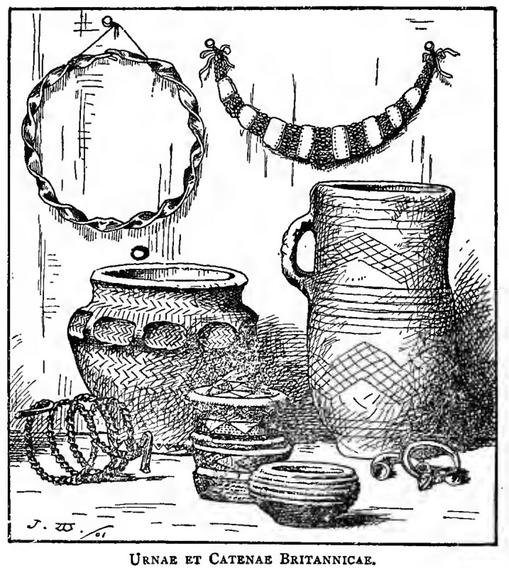 19 Hīc amita mea “Nonne in oppidīs habitābant?” inquit. Et ille “Oppida aedificābant,” inquit “sed, sī Gāius Iūlius vēra affirmat, oppida Britanniōrum antīquōrum loca firmāta erant, nōn loca ubi habitābant. Sed Britannia merīdiāna crēbra erat incolīs et aedificiīs. Sīc nārrat Caesar in librō quīntō Bellī Gallicī. Multī ūnā habitābant, ut putō.” “Itaque nōn plānē barbarī erant,” inquit amita mea. Et ille: “Incolae Cantiī agrī cultūrae operam dabant, atque etiam mercātūrae. Nam Venetī ex Galliā in Britanniam mercātūrae causā nāvigābant. Britannī frūmentum, armenta, aurum, argentum, ferrum, coria, catulōs vēnāticōs, servōs et captīvōs exportābant; frēna, vitrea, gemmās, cētera importābant. Itaque mediocriter hūmānī erant, nec multum dīversī ā Gallīs.”
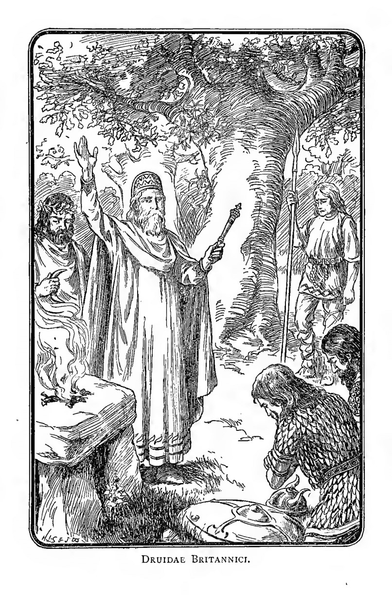 20 “Multī mortuōs crēdēbant, sīcut Graecī et Rōmānī: exstant in Cantiō sepulchra cum urnīs pulchrē ōrnātis. Exstant etiam nummī Britannicī, aureī, argentī, aēneī. Esseda quoque fabricābant: nōn plānē inhūmānī erant, sī rotās ferrātās essedōrum et nummōs aureōs aēneōsque fabricāre poterant. Britannīs antīquīs magnus numerus gallōrum gallīnārumque erat; animī, nōn ēscae, causā cūrābant, ut Gāius Iūlius affirmat. Sed incolae mediterrāneōrum et Calēdoniī ferī et barbarī erant. Mortuōs humābant. Agrī cultūrae operam nōn dabant; nōn frūmentō sed ferīnā victitābant. Deōrum fāna in lūcīs sacrīs et silvīs ātrīs erant. Sacra cūrābant Druidae. Sacra erant saeva: virōs, fēminās, līberōs prō victimīs sacrificābant. Inter sē saepe pugnābant; captīvōs miserōs vēnumdābant, vel cruciābat et trucīdābant: nōnnumquam simulācra magna, plēna victimīs hūmānīs, crēdēbant. Populōrum inter sē discordiae victōriam Rōmānōrum parābant.”
22 Postrīdiē caelum serēnum erat. Inter ientāculum amita mea “Quota hōra” inquit “in viam vōs dabitis? et quotā hōrā cēnāre poteritis?” Et patruus meus “Quīnta hōrā Mārcus et Alexander Dubris adventābant; intrā duās hōrās ad locum proeliī ambulāre poterimus; post ūnam hōram redī ambulābimus; itaque hōrā decimā vel ūndecimā domī erimus, ut spērō.” Tum ego “Nonne ieiūniī erimus,” inquam “sī nihil ante vesperum gustābimus?” “Prandium vōbīscum portātē” inquit amita mea; “ego crustula et pōma cūrābō.
23 Quīnta hōrā appropinquābat, et amīcōs meōs cupidē exspectābam. Ad sonum tintinnābulī ad fenestram properāvī. Ecce, puerī ad iānuam aderant. Cum intrāvērunt, ūniversī exclāmāvimus “Eugē! Opportūnē adventāvistis!” Tum Mārcus “Num sērō adventāvimus?” inquit; “hōrā ferē tertiā fuit cum in viam nōs dedimus; sed via longa est, et Alexander celeriter ambulāre nōn potest.” Sed Alexander “Nōn sum fatīgātus” inquit; “sed quotā hōrā est? “Tum patruus meus “Nōndum quīnta hōra est” inquit: “parātīne estis ad ambulandum?” Et Alexander “Nōs vērō!” inquit. Tum amita mea et Lȳdia “Bene ambulātē!” inquiunt, et in viam nōs dedimus.
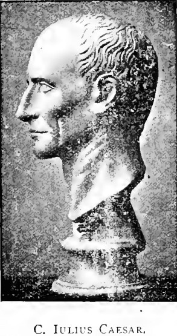 24 Inter viam patruus meus multa nōbīs dē bellō Rōmānōrum cum Britannīs nārrāvit. Prīmō saeculō ante Chrīstum nātum Gāius Iūlius in Galliā bellābat, et, postquam Nerviōs cēterōsque populus Galliae Belgicae dēbellāvit, bellum contrā incolās īnsulae propinquae parāvit. Itaque annō quīntō et quīnquāgēsimō cōpiās suās in Britanniam trānsportāvit. Dē locō unde nāvigāvit et dē locō quō nāvigia sua applīcāvit, vir doctī diū disputāvērunt. Sed inter Dubrās et Rutupiās est locus ad nāvigia applicanda idōneus. Dubrās nōn poterat applicāre; nam scopulī ibi altī erant, ut nunc sunt, et in scopulīs cōpiae armātae Britannōrum stābant. Itaque ad alium locum nāvigāvit, ubi nūllī scopulī fuērunt. Sed Britannī quoque per ōram maritimam ad locum properāvērunt, et ad pugnam sē parāvērunt. Rōmānīs necesse erat nāvigia sua magna ad ancorās dēligāre. Britannis vada nōta fuērunt; itaque in aquam excitāvērunt et cōpiam pugnae dedērunt.
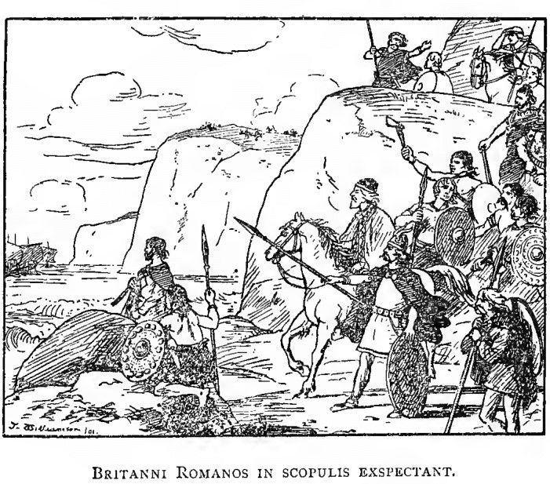 25 Sed iam ad locum adventāverāmus, et patruus meus “Spectāte puerī” inquit; “hic campus apertus est; scopulī dēsunt, et locus idōneus est ad cōpiās explicandās. Illīc fortasse, ubi scaphās piscātōriās spectātis, Gāius Iūlius nāvigia Rōmāna ad ancorās dēligāverat. Hīc Britannī cōpiās suās collocāverant, et equōs in aquam incitāvērunt. Nōnne potestis tōtam pugnam animō spectāre? Sed reliqua nārrābō. Dum Rōmānī undīs sē dare dubitant, aquilifer ‘Ad aquilam vel congregātē,’ inquit ‘nisi ignāvī estis. Ego certē officium meum praestābō.’ Et cum aquilā undīs sē dēdit. Iam ūniversī Rōmānī ad aquiliferum sē congregāvērunt, et cum Britannīs in undīs impigrē pugnābant. Cōnfūsa et asperā fuit pugnā. Prīmō labōrābant Rōmānī; sed tandem Britannōs prōpulsāvērunt et terram occupāvērunt. Ante vesperum Britannī sē fugae dederant. Numquam anteā cōpiae Rōmānae in sōlā Britannicō steterant. Audācia aquiliferī laudanda erat.”
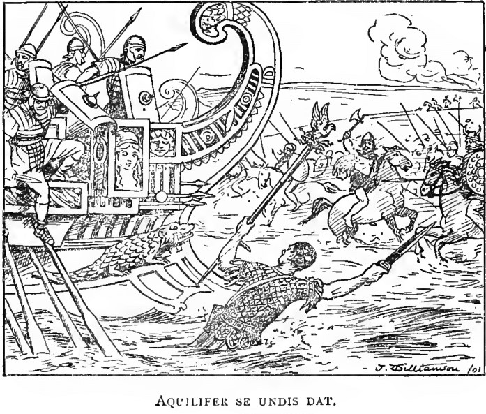 26 Sed nōs puerī prandium iam postulābāmus: nam hōra iam septima erat. Quam bella crustula et pōma tū, amita, dederās! Quantopere nōs bācae rubrae et nigrae dēlectāvērunt! Tum patruus meus “Cum nōs recreāverīmus,” inquit “domum properābimus; nam nōn ante ūndecimam hōram adventāverimus; intereā amita tua, mī Antōnī, nōs exspectāverit. Nōnne prandiō satiātī estis?” Tum ego “Nūlla in mē mora fuerit.” Et Alexander “Ego iam parātus sum” inquit; “sed quandō tū, Mārce, satiātus eris?” Tum Mārcus “Ieiūnus fuī” inquit; “nam per quīnque hōrās nihil gustāveram. Sed cum mē alterō pōmō recreāverō, parātus erō. Tū, Alexander, inter viam crustulīs operam dedistī; nam puer parvus es.” Nōs cachinnāmus, et mox in viam nōs damus.
28 Alia quoque causa bellī fuerat avāritia et exspectātiō praedae. Cupidī erant Rōmānī īnsulam nostram ignōtam et remōtam vīsitandī et explōrandī; nam, ut Tacitus affirmat, ignōtum prō magnificō est. Itaque annō quīntō et quīnquāgēsimō ante Chrīstum nātum C. Iūlius Caesar expedītiōnem suam prīmam contrā Britannōs comparāvit, et victōriam reportāvit, ut nārrāvī; nam post ūnum proelium Britannī veniam ā victōribus implōrāvērunt. Sed expedītiō nōn magna fuerat; neque Rōmānī ūllam praedam ex Britanniā reportāvērunt, nisī paucōs servōs et captīvōs. Annō igitur proximō imperātor Rōmānus secundam et multō maiōrem expedītiōnem in Britanniam parāvit. Nam sēscenta nāvigia onerāria in Galliā aedificāvit, et quīnque legiōnēs Rōmānās ūnā cum magnā multitūdine auxiliōrum Gallicōrum in ōram Belgicam congregāvit.”
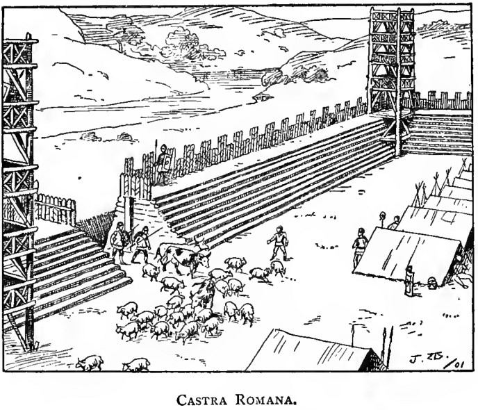
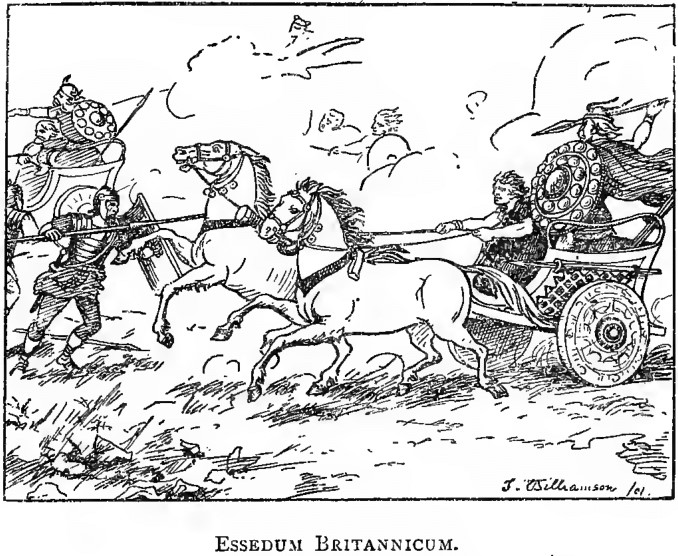 31 “Victōria Caesarī nōn multum prōfuit: nam Britannīs fugātīs īnstāre nōn poterat, quia nātūram locī ignōrābat. Praetereā praefectus castrōrum, nōmine Quīntus Atrius, magnum incommodum nūntiāverat: tempestās nāvigia in lītore afflīctāverat. Tempus perīculōsum erat; nam Caesarī necesse erat ā flūmine ad lītus maritimum properāre, et legiōnēs suās ab īnsectātiōne Britannōrum revocāre. Multa ex nāvigiīs in vadīs afflīctā erant; cētera novīs armīs ōrnanda erant. Opus magnī labōris erat, et aliquantum temporis postulābat. Sed nautārum atque mīlitum virtūs magnō opere laudanda erat. Nōn sōlum per diurna sed etiam per nocturna tempora labōrāvērunt. Intereā Caesar nova nāvigia in Galliā aedificat: sine nāvigiīs nōn poterat cōpiās suās in Galliam reportāre; ūnō tempore necesse erat et nāvigia reparāre et contrā Britannōs bellāre.”
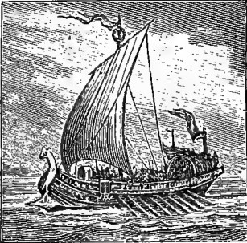 33 Tum Mārcus “Num nātiōnēs barbarae” inquit “nāvēs longās ōrnāre poterant?” Et patruus meus “Fōrmam nāvium Gallicārum Caesar in tertiō librō Bellī Gallicī commemorat. Puppēs altae erant, ad magnitūdinem tempestātum accommodātae; carīnae plēnae. Venetī nāvēs tōtās ex rōbore fabricant; ad ancorās catēnīs ferreīs, nōn fūnibus, dēligābant. Pellēs prō vēlīs erant, sīve propter līnī inopiam, sīve quia in pellibus plūs firmitūdinis quam in vēlīs līneīs erat. Nāvēs longae Rōmānōrum nōn tam altae erant quam Venetōrum, sed rōstrīs ferreīs et interdum turribus armātae erant; itaque victōriam ā Venetīs reportāvērunt” Tum Alexander “Num nāvēs Rōmānae lāminīs ferreīs armātae erant?” inquit. Sed Mārcus: “Quid opus erat lamminīs ferreīs, sī tormenta hodierna antīquīs dēerant?”
35 “Caesar fōrmam et incolīs Britanniae in capite duodecimō et tertiō decimō librī quīntī commemorat. Incolae partis interiōris Celtae et barbarī erant; incolae maritimae partīs ex Belgiō praedae causā immigrāverant, sīcut priōre aetāte trāns flūmen Rhēnum in Belgium migrāvērunt. Et nōnnūlla nōmina gentium maritimārum, unde nōmina urbium hodiernum dērīvāta sunt, Belgica vel Gallica sunt. Belgae autem ā Germānīs oriundī erant, ut Caesar in capite quārtō librī secundī dēmōnstrat. Itaque pars Britannōrum antīquōrum Germānicā orīgine erant. Fōrmam īnsulae esse triquetram dēclārat. Sed ūnum latus ad Galliam spectāre exīstimat, alterum ad Hispāniam atque occidentem, tertium ad septentriōnēs. Itaque dē lateribus et angulīs laterum errābat. Hiberniam ab occidente parte Britanniae esse rēctē iūdicat, īnsulam Monam inter Britanniam et Hiberniam esse.”
38 “Itaque Rōmānī ōrdinēs suōs contrā equitēs Britannōrum in prīmō certāmine nōn servāverant. Sed postrīdiē Rōmānī victōriam reportāvērunt. Britannī in collibus procul ā castrīs Rōmānīs stābant. Caesar magnum numerum cohortium et ūniversōs equitēs lēgātō sed Trebōniō mandāverat. Hostēs subitō prōvolāvērunt, et ōrdinēs Rōmānōs impugnāvērunt. Sed Rōmānī superiōrēs fuērunt. Cōpiās Britannicās prōpulsāvērunt, et in fugam dedērunt. Magnum numerum hostium trucīdāvērunt. Tum dux continuīs itineribus ad flūmen Tamesam et in fīnēs Cassivellaunī properāvit. Cassivellaunus autem cum quattuor mīlibus essedariōrum itinera Rōmānōrum servābat, et paulum dē viā dēclīnābat sēque in silvīs occultābat. Interdum ex silvīs prōvolābat et cum mīlitibus Rōmānīs pugnābat; Rōmānī autem agrōs Britannōrum vastābant.”
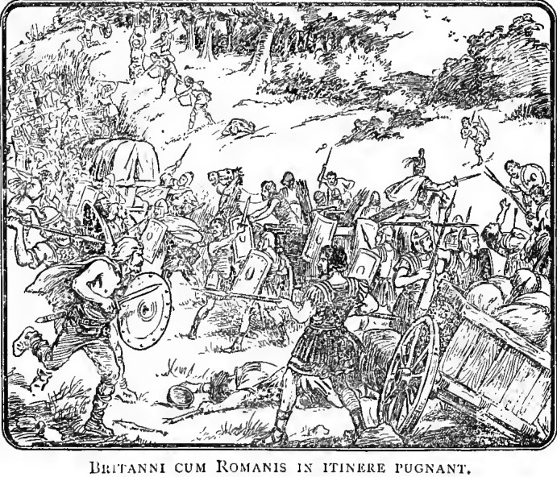 39 “In parte flūminis Tamesae ubi fīnēs Cassivillaunī erant ūnum tantum vadum erat. Quō cum Caesar adventāvit, cōpiās hostium ad alteram rīpam flūminis collocātās spectāvit. Rīpa autem sudibus āctīs firmāta erat; et Britannī multās sudēs sub aquā quoque occultāverant. Sed Caesar hostibus īnstāre nōn dubitāvit. Aqua flūminis profunda erat, et mīlitēs capite sōlum ex aquā exstābant; sed Rōmānī sē aquae fortiter mandāvērunt, et Britannōs in fugam dedērunt. ‘Oppidum’ Cassivellaunī nōn longē aberat, inter silvās palūdēsque situm, quō Britannī magnum numerum hominum, equōrum, ovium, boum, congregāverant. Locum ēgregiē et nātūrā et opere firmātum Caesar ex duābus partibus oppugnāre properāvit: oppidum expugnāvit et dēfēnsōrēs fugāvit.”
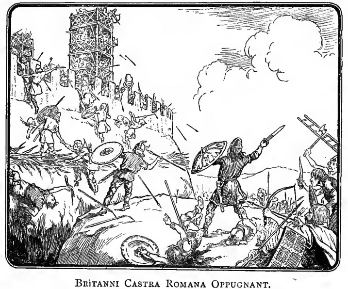 40 Sed in Cantiō, ubi quattuor rēgēs Britannīs praeerant, nōndum fīnis erat pugnandī. Britannī castra Rōmāna ad mare sita fortiter oppugnant; sed frūstrā. Rōmānī victōrēs. Intereā multae ex cīvitātibus Britannicīs pācem ōrant. Trinobantibus Caesar novum rēgem dat, et pācem cōnfirmat. Itaque propter tot clādēs, propter fīnēs suōs bellō vastātis, maximē autem propter dēfectiōnem tot cīvitātum, Cassivellaurum dē condiciōnibus pācis dēlīberat. Caesar pācem dat; Cassivellaunum vetat Trinobantēs bellō vexāre, et tribūtum Britannīs imperat. Tum cōpiās suās cui magnō numerō obsidum et captīvōrum in Galliam reportat. Britannī fortiter sed frūstrā prō ārīs et focīs suīs pugnāverant.”
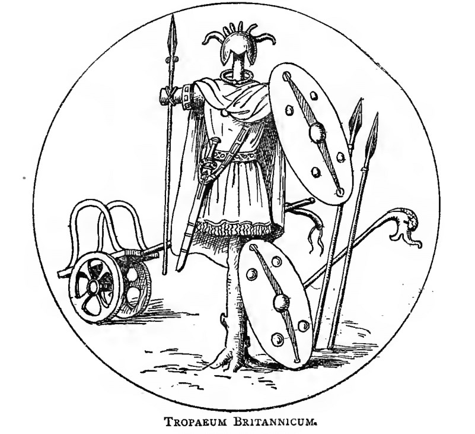
42 Tum nautam veterānum dē nōminibus nāvium longārum interrogāvimus. In classe Britannicā mīlitāverat, sed tum mīlitiā vacābat, et cūstōs erat ōrae maritimae. Nōmina nāvium, ut affirmābat, erant Grandīs, Rēgālis, Magnifica, Tonāns, Arrogāns, Ferōx; omnibus tegimen erat lāminīs ferreīs fabricātum. In Grandī praefectus classis nāvigābat. Omnēs ad ancoram dēligātae erant. Tum Alexander “Cūr nōn” inquit “ad nāvēs in scaphā nāvigāmus?” Mihi et Mārcō prōpositum pergrātum erat; et nauta ad nāvigandum parātus erat. Itaque patruus meus “Sērō domum adventābimus” inquit; “sed sī vōs puerī cupidī estis nāvem longam spectandī, ego nōn dēnegābō.” Tum nauta “Exspectāte” inquit “dum omnia parō”; et vēla rēmōsque in scapham portāvit. Quam dulce erat in marī tranquillō nāvigāre! Ventus lēnis flēbat, et brevī tempore ad Rēgālem appropinquāvimus. Tum classiāriī nōbīs nāvem ingentem mōnstrāvērunt cum māchinīs, tormentīs, rōstrīs, cēterīs.
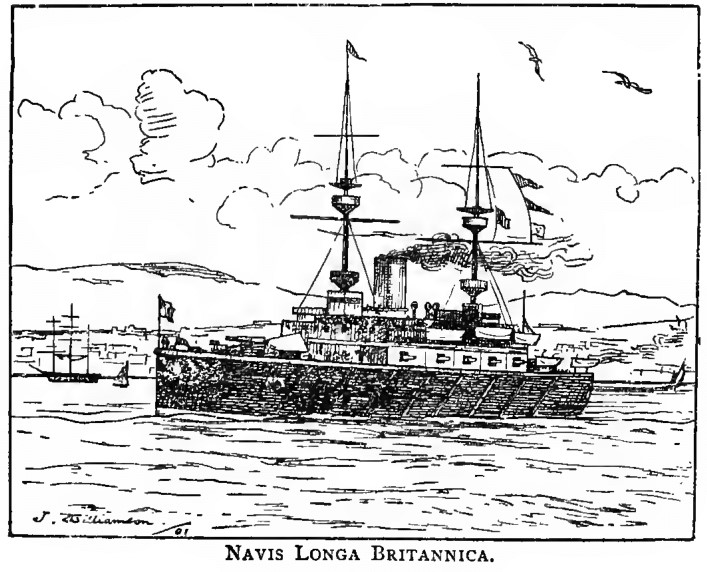 43 Hōra iam decima erat cum ā Rēgālī nōs in scapham dedimus. Tum ad lītus rēmigāre necesse erat; nam ventus adversus erat. Ego et Mārcus ūnā cum patruō meō et nautā veterānō rēmīs labōrāvimus. Sed nōn ante ūndecimam hōram in lītore stetimus. Dum domum properāmus, imber fuit, et necesse erat in tabernā aliquantum temporis exspectāre: intrāvimus et nōs recreāvimus; nam fatīgātī erāmus. Sed ‘post tenebrās lūx.’ Cum domum adventāvimus, amita mea et Lȳdia “Ubī tam diū fuistis?” inquiunt; “nōs ānxiae fuimus; sed cēna iam parāta est.” Tum nōs “Multa spectāvimus” inquimus; “ambulātiō longa sed pergrāta et ūtilis fuit.” Post cēnam Mārcus et Alexander Dubrās in vehiculō properāvērunt. Ego per noctem dē Britannīs antīquīs et dē classe Britannicā hodiernā somniāvī. Ante oculīs erant virī fortēs membrīs rōbustīs, flāvīs capillīs, oculīs caeruleīs cum Rōmānīs terrā marīque pugnantēs.
Dulce Domum.
Deus salvam fac rēgīnam, mātrem patriae.
This work is licensed under a Creative Commons Attribution-ShareAlike 4.0 International License.
The source is available at https://github.com/FergusJPWalsh/sonnenschein.